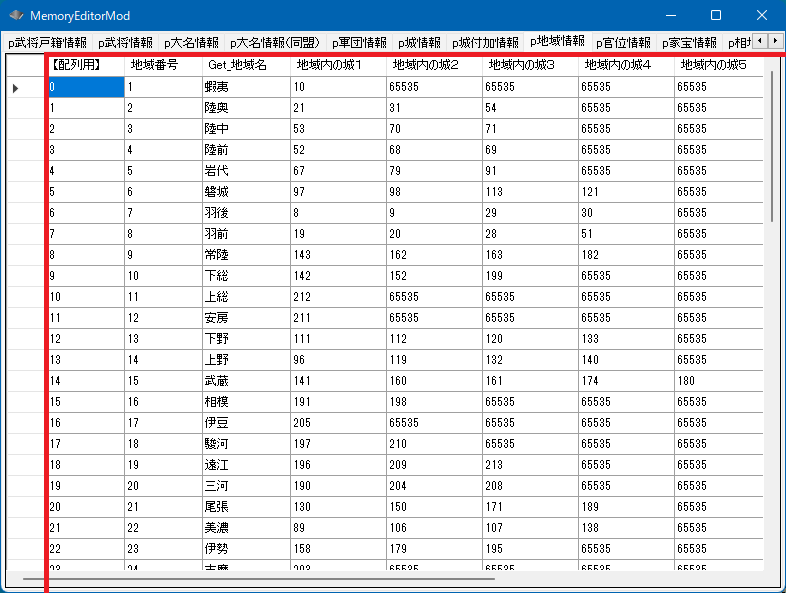
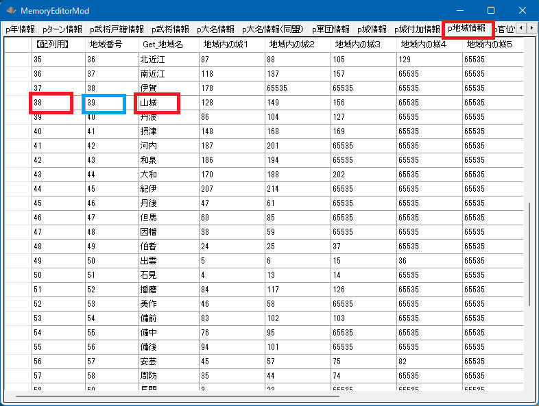

地域とは、日本国の意味ではなく、「大和、丹波、北信濃、備中」などといった、地域のことです。
天翔記上では、「国」という言葉が使われていますが、日本国と紛らわしいため
地域という表現にしています。
地域と一言で言っても３つの概念で構成されます。
地域という抽象的なカテゴリの概念。
地域の一覧リストに相当する「地域の配列」の概念。

地域の配列のうち、どれか１つの地域
地域使い方は主に２つしかありません。
ひとつは、特定の地域に含まれている城のリストを求める方法です。
地域→城を求めるものとなります。
void カスタム::On_プレイヤ担当ターン《メイン画面》() {
auto obj北信濃国 = p地域情報[地域::地域配列番号::北信濃];
番号リスト型 list;
if (obj北信濃国.地域内の城１【城番号】 != 0xFFFF) {
int iCastleID = obj北信濃国.地域内の城１【城番号】 - 1; // 城番号→城番号【配列用】
list.push_back(iCastleID);
}
if (obj北信濃国.地域内の城２【城番号】 != 0xFFFF) {
int iCastleID = obj北信濃国.地域内の城２【城番号】 - 1; // 城番号→城番号【配列用】
list.push_back(iCastleID);
}
if (obj北信濃国.地域内の城３【城番号】 != 0xFFFF) {
int iCastleID = obj北信濃国.地域内の城３【城番号】 - 1; // 城番号→城番号【配列用】
list.push_back(iCastleID);
}
if (obj北信濃国.地域内の城４【城番号】 != 0xFFFF) {
int iCastleID = obj北信濃国.地域内の城４【城番号】 - 1; // 城番号→城番号【配列用】
list.push_back(iCastleID);
}
if (obj北信濃国.地域内の城５【城番号】 != 0xFFFF) {
int iCastleID = obj北信濃国.地域内の城５【城番号】 - 1; // 城番号→城番号【配列用】
list.push_back(iCastleID);
}
if (obj北信濃国.地域内の城６【城番号】 != 0xFFFF) {
int iCastleID = obj北信濃国.地域内の城６【城番号】 - 1; // 城番号→城番号【配列用】
list.push_back(iCastleID);
}
if (obj北信濃国.地域内の城７【城番号】 != 0xFFFF) {
int iCastleID = obj北信濃国.地域内の城７【城番号】 - 1; // 城番号→城番号【配列用】
list.push_back(iCastleID);
}
if (obj北信濃国.地域内の城８【城番号】 != 0xFFFF) {
int iCastleID = obj北信濃国.地域内の城８【城番号】 - 1; // 城番号→城番号【配列用】
list.push_back(iCastleID);
}
デバッグ出力 << "北信濃国に属する城" << endl;
for (int iCastleID : list) {
デバッグ出力 << Get_城名(iCastleID) + Get_城称(iCastleID) << endl;
}
}
もう一つは、逆の流れで城→国を求めるものです。

void カスタム::On_プレイヤ担当ターン《メイン画面》() {
int iCastleID = 城配列番号::室町御所;
// その室町御所が所属している地域
int iChiikiID = p城付加情報[iCastleID].所属地域【地域番号】 - 1; // 地域番号→地域番号【配列用】
デバッグ出力 << "室町御所は" << Get_地域名(iChiikiID) << "国にあります" << endl;
}
void カスタム::On_プレイヤ担当ターン《メイン画面》() {
int i武田信玄BushouID = Get_武将番号【配列用】(顔番号::武田晴信);
if (0 <= i武田信玄BushouID && i武田信玄BushouID < 最大数::武将情報::配列数) {
// 武田信玄が所属している城
int iCastleID = p武将情報[i武田信玄BushouID].所属居城【城番号】 - 1;
if (0 <= iCastleID && iCastleID < 最大数::城情報::配列数) {
// その城が所属している地域
int iChiikiID = p城付加情報[iCastleID].所属地域【地域番号】-1;
デバッグ出力 << Get_名字(i武田信玄BushouID) + Get_名前(i武田信玄BushouID) << "は..." << endl;
デバッグ出力 << Get_地域名(iChiikiID) << "国の地方に居ます" << endl;
}
}
}
「地域 － 国」に関する主な所は以上となります。
詳しくは「地域情報型.h」や、「城情報型.h」内の「城付加情報型」などを参照してください。